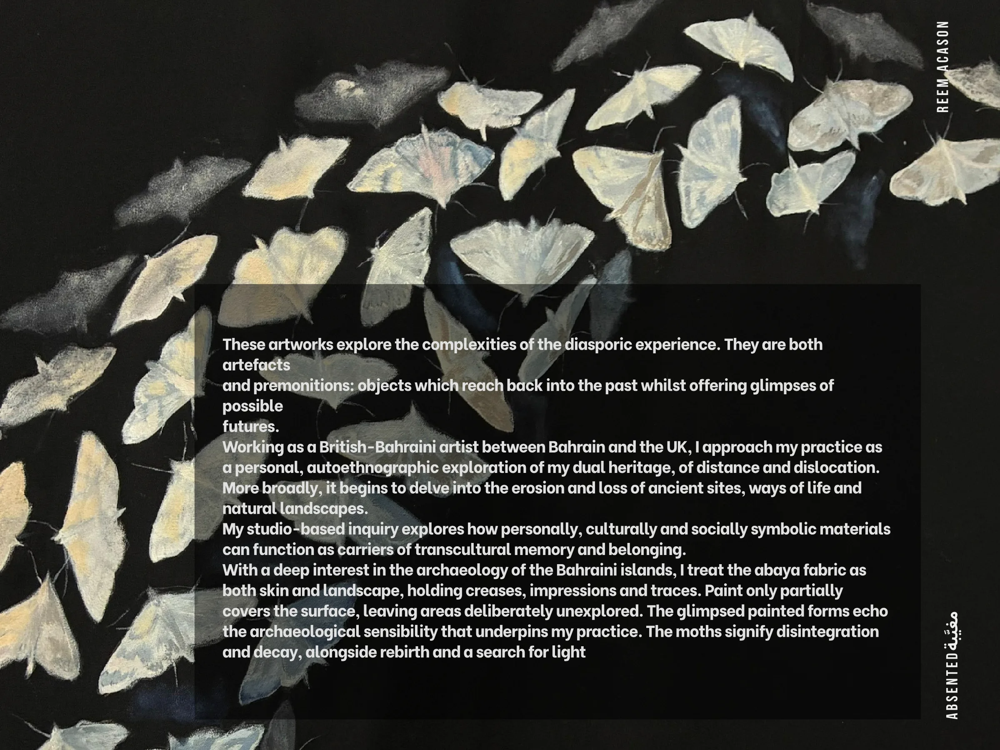

These artworks explore the complexities of the diasporic experience. They are both artefacts
and premonitions: objects which reach back into the past whilst offering glimpses of possible
futures.
Working as a British-Bahraini artist between Bahrain and the UK, I approach my practice as a personal, autoethnographic exploration of my dual heritage, of distance and dislocation.
More broadly, it begins to delve into the erosion and loss of ancient sites, ways of life and natural landscapes.
My studio-based inquiry explores how personally, culturally and socially symbolic materials can function as carriers of transcultural memory and belonging.
With a deep interest in the archaeology of the Bahraini islands, I treat the abaya fabric as both skin and landscape, holding creases, impressions and traces. Paint only partially covers the surface, leaving areas deliberately unexplored. The glimpsed painted forms echo the archaeological sensibility that underpins my practice. The moths signify disintegration and decay, alongside rebirth and a search for light
Reem acason
